Rstudio
Introduction
RStudio is an IDE (Interactive Development Environment) for R that attempts to simplify the R user experience. It is an alternative to the basic R console which is what you get when you install R on Windows or Apple. In many ways it repreesnts an effective replacement for the R console although it is useful to know how to interact with R independently of RStudio. Still, for the bulk of this class we will be using RStudio to accomplish most of the work.
Starting it Up
When first starting RStudio you are confronted with a screen that resembles the following. There are four "panes" that accomplish different tasks. It is important to understand each one.
File Editor: This is where you edit program code. If you click a file in the Navigator pane (#4) then the contents show up in the File Editor. You can also go to File -> New to open an existing R script file or create a new one. You can enter any number of R commands and use the Run button to "send" commands to the R console (window #3) for execution. You can have any number of R files open at any time.
Workspace and History Viewer: This allows you to see what variables you have in your R environment. You can also see the history of the commands that you have entered in case you need to recall what it is you did previously. Also, you can selectively clear variables in your workspace and/or save them off to files for later use.
R Console: This is the R console. This is identical to what you get if you start R from a terminal window or using the default R interface for MS Windows. You can enter R commands here. If you are just testing out some code then type commands here. If you are developing a function or some code you want to share then use the Editor (Pane #1) to enter code for safekeeping and ongoing development.
File Navigator, Package, Plot, and Help Viewer: This window has a lot of capability. The primary purpose if to let you "surf" around on your local computer and manage files. You may also create, rename, and remove folders easily. If you click a file name then it will show up for editing in Pane #1. You may also view installed packages, see help information, as well as a history of any plots you have created.
Common Tasks
Installing a Package: This can be accomplished by using the Tools -> Install Package Menu item. As an example, suppose you want to install the package named "accelerometry". Go to Tools -> Install Packages:
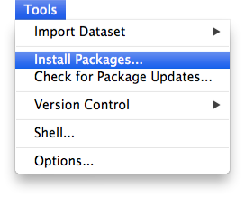 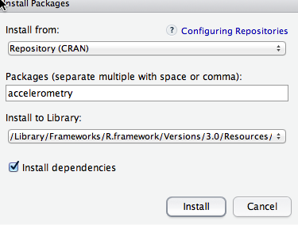
Changing your default working directory: Suppose you want to change the default directory you use when starting RStudio. By default it is set to your "home" directory which is probably a good default. However let's say that you want R to use a directory called /Users/john/RProjects (this is using Linux and Apple OS as an example). Go to Rstudio -> Preferences -> General. You can use the "Browse" function to inform R of your new default directory. Note that it must already exist. If it doesn't then use Pane #4 to create the folder or create the folder using your native operating system.
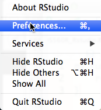 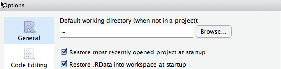
Creating, deleting, or removing folders, Changing current working directory:In Pane #4 there are a number of tools that allow you to create and delete your folders. This is similar, though not identitcal to, your operating system's functions for creating folders and files. Note that Pane #4 also allows you to do "Set As Working Directory" which is the equivalent of the "setwd()" command in R.
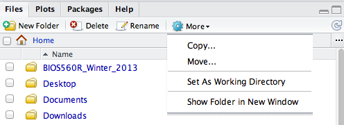
Viewing your working environment variables: Pane #3 contains the Workspace viewer as well as the history viewer. The Workspace viewer is useful for seeing what objects you currently have in your current R session. You can inspect or delete these variables. As an example, in the following graphic you can click on "mydf" which is a data frame currently residing in the workspace. The contents of mydf will be shown in Pane #1 for your inspection.
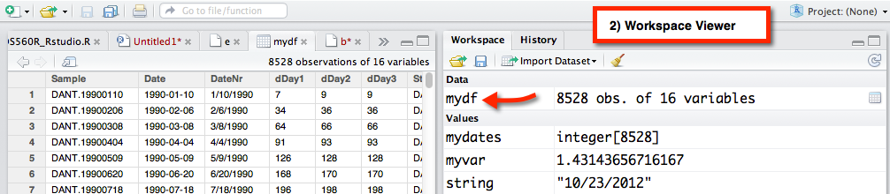
Creating / Editing R files: Pane #1 is the place where you enter in R commands and statements that you want to save in a file. If you want to just enter a few quick commands then do so in the console pane (#3) but if you want to save commands then do so in Pane #1. This is especially true if you are trying to develop a function. This typically requires writing statements, running them and checking them for errors, making changes, and re-running. You definitely want to save code like this. To create a new file do File -> New from the RStudio menu item which will open an untitled tab.
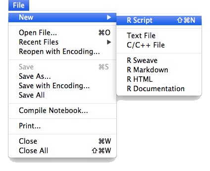 
Also note that you can highlight code in the the editor and click the Run button to have the commands sent to the console. This keeps you from having to type stuff into the Console. As an example check out the code below. I've entered some code into the window, highlighted it, and have pressed the Run button. The results will be displayed in the console window.
You can also highlight code, click the "magic wand" icon and have RStudio do things like doing auto indent for you. It will also try to find help of function names that you have highlighted.
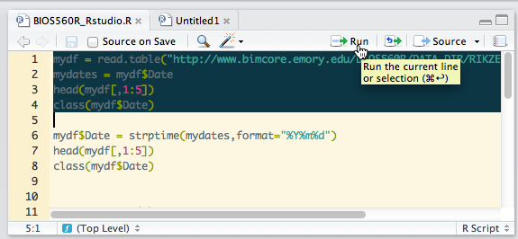 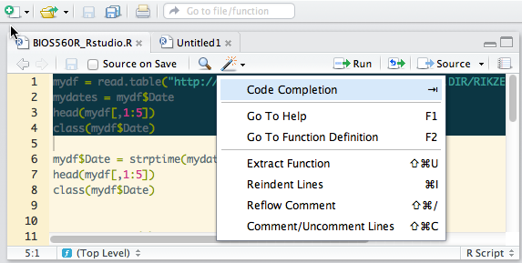
Creating a Project:RStudio supports the concept of a "Project". If you go to Project -> Create you will be prompted for some information like what folder should contain the new project. Rstudio is basically presenting you with the opportunity to create a "blank slate" (blank folder actually) in which to create R scripts and data. We will use this capability when creating packages though you can use it any time you wish to "clear out" and start a fresh project
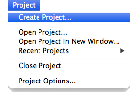 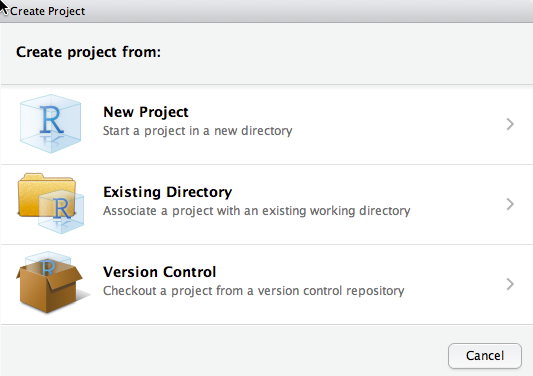 So click "New Project" and you will see a screen asking for the identifying information. Supply the name of the new folder and let RStudio create it. It will return you to a "fresh" workspace.
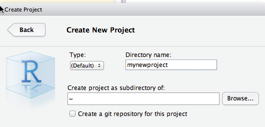
You might see only three panes with the File Editor missing. If you do then click the window open/close icon as indicated below to view the Editing pane:
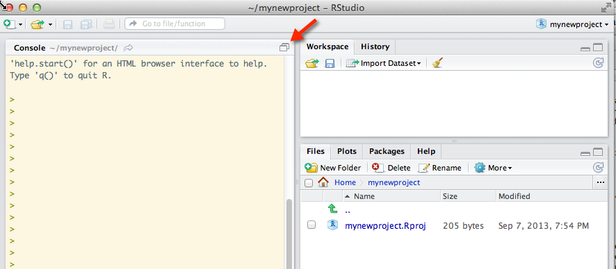